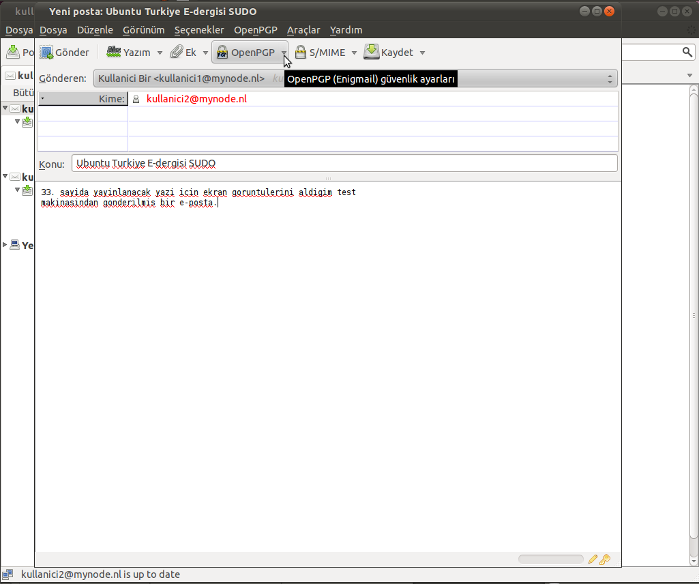
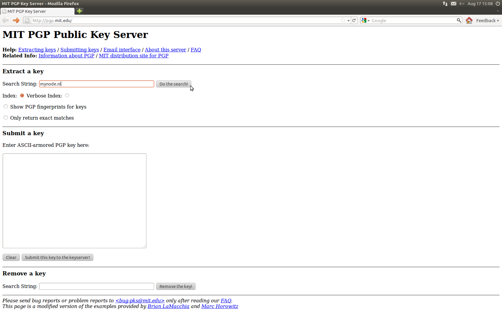

İlk örneklerini altmışlı yıllarda gördüğümüz e-posta sistemi, zaman içinde hızla evrilerek günümüzdeki şeklini aldı. Bu süre zarfında doğal olarak kullanıcıların ihtiyaçları da değişti. İlk çıktığı zamanlarda akademik iletişim hizmetini gören e-posta teknolojisi günümüzde artık temel iletişim ihtiyaçlarımız arasında önemli bir yer edinmiş durumda.
Elektronik posta teknolojisinin yaygınlaşıp, hayatımızın her alanına girmeye başlamasıyla, kötü amaçlı e-postalar da kullanıcılar için büyük bir problem haline geldi. 2010 Ağustos tahminlerine göre her gün gönderilen e-postaların 200 milyar adedi [1] spam adı verilen istenmeyen postalardan oluşuyor.
E-postaların bir güvenlik sorunu haline gelmesi, geliştiricileri ister istemez çözümler aramaya itti. Bunun sonucu olarak, gönderenin doğrulanması için sertifika ya da şifreleme çözümleri ortaya çıktı. Bu yazıda GnuPG temelli Enigmail eklentisi ile Thunderbird üzerinden gönderilen postaların nasıl imzalandığını ve şifrelendiğini anlatmaya çalışacağım.
Nasıl çalışıyor?
Gönderdiğimiz postaların, sadece istediğimiz alıcı tarafından içeriğine ulaşılmasını ve alıcının da mesajı bizim yolladığımızdan emin olmasını sağlayan bu sistemi arkadaşımıza verdiğimiz fakat anahtarı bizde duran bir asma kilide benzetebiliriz. Yani, diyelim ki benim bir kutum var ve arkadaşıma o kutu içerisinde çok önemli bir mesaj yollayacağım. Bu mesajın taşıyıcı tarafından görülmesini istemiyorum. Ayrıca arkadaşım kutuyu aldığında o kutuyu yollayanın ben olduğunu anlayabilmeli ki, eğer taşıyıcı, kutuyu benzeriyle değiştirmişse aldığı mesajı dikkate almasın.
Şifreleme
Arkadaşım, önce gidip bir asma kilit alıyor ve bana yolluyor. Ben o kilit ile kutumu kilitliyorum ve arkadaşıma yolluyorum. Taşıyıcıda anahtar olmadığından kutuyu açıp içindeki mesajı okuyamıyor. Teknik olarak ifade etmek gerekirse asma kilit genel anahtar, kilidi açan anahtar da özel anahtar oluyor. Peki arkadaşımın bana yolladığı kilidin gerçekten onun kilidi olup olmadığını nasıl anlayabilirim? Bunun için arkadaşımız asma kilidini onu tanıyanlara dağıtıyor ve üzerine kendi imzalarını atmalarını istiyor. Böylelikle ben arkadaşımdan gelen kilidi aldığımda üzerindeki imzalara bakarak o kilidin gerçekten arkadaşıma ait olduğunu anlayabiliyorum. Bu analoji imzaların taklit edilemeyeceği varsayımından ötürü gerçek dünyada kusurludur fakat 1’ler ve 0’lar dünyasında o imzalar pratik olarak taklit edilemezler.
İmzalama
Eğer imzaların taklit edilemeyeceğini kabul edersek, arkadaşım ona yolladığım kutu üzerinde benim imzamı görünce de, kutunun gerçekten benden geldiğine ve yolda değiştirilmediğine emin oluyor. Böylelikle güvenli şekilde mesajımızı arkadaşımıza iletmiş oluyoruz. Umarım örnek yeterince açıklayıcı olmuştur. Zira daha iyisini bulamadım.
Bu işi nasıl yapıyoruz?
Ubuntu 11.04 depolarında Thunderbird 3.1 ve bununla uyumlu olan Enigmail eklentisi halihazırda bulunuyor. Yapmamız gereken Ubuntu Yazılım Merkezi’ne girip thunderbird diye aramak ve gelen sonuçlar arasından Enigmail ve Thunderbird’ü kurmaktan ibaret.

Thunderbird’de kullanıcı hesaplarının tanıtılması
Öncelikle Thunderbird’ü açıyoruz. Bizi şöyle bir ekran karşılıyor.

Bu ekranda posta hesabımızın adresini ve şifresini yazıp Devam’a tıklıyoruz. Yenilenen ekranda Thunderbird posta sunucumuzun ayarlarını bulmaya çalışıyor. Eğer büyük sağlayıcılardan birini kullanıyorsanız bu kısımda ekstra bir ayar yapmanıza gerek yok. Yok Thunderbird ayarlarınızı tanıyamazsa elle ayarlamaları yapabilirsiniz. Hesap oluştur diyerek devam ediyoruz.

Eğer Thunderbird tarafından tanınan sertifika sağlayıcıların birinden alınmış bir sertifikaya sahipse posta sağlayıcınız bu kısımda aşağıdaki ekranı görmeyeceksiniz. Eğer thunderbird tarafından tanınmayan bir sağlayıcıdan alınmış sertifika kullanıyorsa aşağıdaki gibi bir ekran göreceksiniz. Bu bir güvenlik açığı olarak düşünülmemelidir. Sadece, posta sunucunuz kendi sertifikasını kullanıyor olabilir. Güvenlik İstisnasını Onayla diyerek devam ediyoruz.

Gelen ekran bize Thunderbird’ü ontanımlı olarak hangi işlemler için kullanmak istediğimizi soruyor. Buradan ihtiyacımıza uygun olanı seçip devam ediyoruz.

Üstteki soruyu yanıtladığımızda artık posta hesabımız tanıtılmış ve Enigmail eklentisi kurulmuş bir halde Thunderbird’ü kullanabiliriz. Panelde OpenPGP menüsünü görüyorsanız Enigmail’in kurulmuş olduğundan emin olabilirsiniz.

Bu menüye tıklayıp Kurulum Sihirbazı’nı açıyoruz. Aslında kendi anahtarlarımızı kendi seçeneklerimize göre oluşturabiliriz fakat başlangıç için sihirbazı kullanmanın daha uygun olacağını düşündüm. Bizi aşağıdaki gibi bir ekran karşılıyor.

İleri tuşu ile devam ediyoruz. Gelen ekranda Thunderbird’e tanımlı olan hangi hesaplar için anahtar üretmek istediğimiz soruyor. Ben her hesap için farklı anahtar çifti kullanmayı tercih ettiğimden sadece şu anda kullanacağım hesap için anahtar üretmeyi seçtim.

Aşağıdaki ekran varsayılan olarak bütün postaları imzalamak isteyip istemediğimizi soruyor. Yine bir tercih meselesi, ben alıcıya göre imzalamaya karar vereceğimi söyleyip devam ediyorum.

Bir sonraki aşamada bize bütün postaları şifrelemeyi isteyip istemediğimiz soruyor. Bu soruya da alıcıya göre karar vereceğimi söyleyip tamamlıyorum.

Gelen ekranda performans için bazı ayarlar yapmak istediğini söylüyor. Kabul ediyorum. Siz burada detaylar butonuna tıklayıp hangi ayarların değiştirileceğini görebilir ve hangilerinin değiştirileceğine karar verebilirsiniz.

Gelen ekranda yeni bir anahtar çifti mi oluşturacağımı yoksa olan bir çifti mi kullanacağımı soruyor ben yeni bir tane oluşturacağımı söyleyip devam ediyorum. Bir sonraki ekranda unutmamamız gereken bir şifre belirleyip yazıyoruz ve devam ediyoruz.

Bize oluşturacağı anahtarın özelliklerini söylüyor. Bu ekrani da geçiyoruz.

Anahtar üretimine başlıyor. Anahtar üretmek üstelik 2048 bitlik bir anahtar üretmek biraz zaman isteyen bir iş. Hızlı olmasını istiyorsak disk kullanımını gerektiren işlemler yapabilir, internette gezebiliriz. Anahtar üretimi bitince bizi şöyle bir ekran karşılıyor. Bu noktada bir iptal sertifikası oluşturmak yararımıza olacaktır. İleride artık anahtarımızı daha fazla kullanmak istemediğimizde ya da yeni bir anahtar üretmek istediğimiz zamanlar için bir kenarda bulunması her daim iyidir.

Sertifikayı oluşturunca şöyle bir uyarı veriyor.

Bu uyarıyı da geçtiğimizde artık anahtar çiftimizi kullanabilir haldeyiz.

Şimdi genel anahtarımızı bir anahtar sunucuya yükleyelim ki bizi arayanlar bulabilsinler. OpenPGP menüsünden Anahtar Yönetimi’ne geliyoruz ve Açılan pencerede Ontanımlı olarak tüm anahtarları göster dedikten sonra oluşturduğumuz anahtara sağ tıklayıp Genel Anahtarları Anahtar Sunucusuna Yükle seçeneğiyle bir anahtar sunucuya yüklemek istediğimizi söylüyoruz.

Bu aşamayı da tamamladıktan sonra artık günlük kullanımımız için bu işlemleri bir daha yapmak zorunda değiliz. Yeni bir posta yazıp anahtarlarımızı deneyelim.

Bu ekranda OpenPGP menüsü altında imzalama veya şifreleme ya da her ikisini de seçebiliriz. Sağ altta gördüğünüz sarı renkteki anahtar ve kalem postanın hem imzalanacağını hem de şifreleneceğini anlatıyor.
Postamızı yolladığımızda karşıdaki kullanıcı gelen postanın üzerinde yeşil bir kısım görüyor. Bu kısım postanın gerçekten de benden geldiğini belli eden kısım. Mühürlü mektup ve kilit işaretleri de ayrıca şifreleme yapıldığını anlatıyor. Bu işaretlerden birine tıklayıp detaylı bilgilere ulaşabiliriz.

Eğer şifrelediğimiz postayı yolda biri ele geçirip okumaya kalksaydı arkadaşımızın anahtarı olmadığından şöyle bir ekranla karşılaşacaktı.

Gördüğünüz gibi mesajımız şifrelenmiş durumda ve sadece arkadaşımız tarafından deşifre edilebiliyor.
Şimdi tanıdığımız birinin anahtarını nasıl imzalarız ona bakalım. Yine Anahtar Yönetimi penceresini açıyoruz ve imzalamak istediğimiz anahtarın üzerine sağ tıklayıp Anahtarı İmzala diyoruz. Gelen pencerede anahtarın gerçekten arkadaşımıza ait olup olmadığını ne kadar dikkatli kontrol ettiğimizi seçip Tamam diyoruz.

Bu işlem bittikten sonra tekrar anahtarlarımızı sunucuya yükleyelim ki imzalanmış halleri sunucuda da bulunsun. Şimdi gidip anahtarımızı yüklediğimiz anahtar sunucudan anahtarımızın nasıl gözüktüğüne bakabiliriz. Anahtarımızı yüklediğimiz sunucuya gidiyor ve posta adresimizi aratıyoruz.

Gelen ekranda posta adresine tıklıyoruz ve anahtar özellikleri açılıyor. Burada göreceğiniz gibi anahtar hem anahtarı üreten kişi hem de kullanıcı2 tarafından imzalanmış. Ne kadar çok imza o kadar çok güvenilirlik anlamına geliyor. Hatta dünyanın çeşitli yerlerinde geliştiriciler genellikle buluştuğunda anahtar imzalama partileri düzenlenir. Bunu da bir ek bilgi olarak verelim. Bir ek daha Debian geliştiricisi olmak için anahtarınızın, sizinle mümkünse yüzyüze görüşmüş bir Debian geliştiricisi tarafından imzalanması gereklidir. Özetle, imza iyidir.

Son olarak anahtarımızı artık kullanmak istemediğimizde neler yapmamız gerektiğine bir bakalım. Tekrar Anahtar Yönetimi’ne dönüyoruz. Kullanmak istemediğimiz anahtara sağ tıklayıp Anahtar Feshet diyoruz. Bu işlem bittikten sonra anahtarımızı tekrar anahtar sunucuya yüklüyoruz ki bakanlar artık kullanmadığımızı bilsinler.

Kullanmadığınız anahtarlarınızı silmenize gerek yok fakat illa silmek istiyorsanız önce dosyaya aktar diyerek özel anahtarınızla birlikte bir yedeğini almanızı tavsiye ederim. Daha sonra penceresinde sağ tıklayıp “Anahtarı Sil” diyebilirsiniz. Yedeğini almadığınız anahtarı asla ama asla geçersiz kılmadan önce silmeyin. Bu işlemin geri dönüşü yoktur. Üstelik sildiğiniz anahtarla şifrelenmiş postaları anahtarınızı sildikten sonra okuyamayacağınız da aklınızda bulunsun.
Eğer daha önce size posta göndermemiş birine şifrelenmiş posta göndermek istiyorsanız, o posta hesabına ait genel anahtara ihtiyacınız olacaktır. Anahtar sunucular bu işi yaparlar ve kişilerin genel anahtarlarını tutarlar. Böylelikle biz daha önce hiç imzalanmış postasını almadığımız birinin genel anahtarını anahtar sunucudan bilgisayarımıza aktararak o kişiye şifrelenmiş posta gönderebiliriz. Güvenli postalar dilerim :)
Kaynak
[1] http://en.wikipedia.org/wiki/E-mail_spam#Statistics_and_estimates